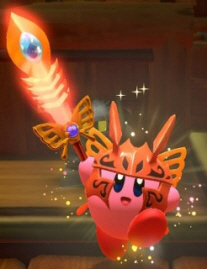

1. 커비
동글동글한 핑크색 공 모양 생김새에 뭐든지 빨아들여서 삼키는 능력을 가진, 별의 커비 시리즈의 주인공이다.
눈 색: 청안
대표 색: 분홍색
성별, 나이: 불명
거주지: 푸푸푸랜드
신체 특징:
온몸 중에 유일하게 눈과 발만 분홍색이 아니다.
빨간색 발은 신발이 아니고 진짜 발이다.
원작자의 말에 따르면 뼈도 이빨도 없다고 한다.
성격:
좌우명은 '내일은 내일의 바람이 분다'.
순수하고 천진난만한 꼬마같은 성격에 정의롭고 용감하다.
반면에 앞뒤 안 가리는 단순한 면이 있는데, 예를 들어 게임 중 하나에서 자신이 먹으려던 케이크가 없어지자, 전과가 있는 "디디디 대왕"의 짓이라고 생각해 아무 죄도 없는 디디디 대왕을 일단 그냥 팼다고 한다.
하지만 자신에게 맞서거나 적으로 판단한 자와는 망설임 없이 싸운다. 설령 그 상대가 한때 아군이었을지라도. 반대로 한때 적이었던 자여도 자신을 돕거나 화해의 여지를 보인다면 뒤끝없이 받아준다.
이런 모습들을 통해 커비가 단순하고 뒤끝없는 대인배스러운 성격임을 알 수 있다.
식성:
추가 설정은 굉장한 먹보. 게임에서 등장하는 아이템도, 심지어는 맵의 이름까지도 대부분 먹을 것들 투성이다. 좋아하는 음식은 맥시멈 토마토. 이 맥시멈 토마토는 게임 상에서 체력을 전부 회복시켜 주는 아이템으로 등장한다. 그리고 쓰러졌을 때 자동 회복하는 황금 토마토도 있다. 케이크도 좋아하는지 케이크가 이야기의 발단이 된 게임이 2개가 있다. 싫어하는 음식은 딱히 없는 듯. 다만 사과를 먹다가 안에서 털 달린 애벌레가 나온 일이 있던 후 그게 트라우마가 되어 털벌레를 굉장히 싫어한다고. 별의 커비 3 & 별의 커비 64에 등장하는 거미의 모습을 한 잡몹인 마리엘을 삼키면 체력이 오히려 줄어들기도 한다.
카피 능력:
적을 빨아들여 능력을 카피하는 커비만의 기술
카피 능력: 스워드, 파이어, 레인저, 니들, 밤, 해머, 드릴, 아이스, 커터, 토네이도, 슬립, 크래시
스워드: 칼로 적을 베어버린다.
기간트 스워드: 가드가 강해지고 공격도 강해진다
메타 나이트 스워드: 공격이 강해지고 체력이 풀피로 찼을 때는 검을 휘두르면 문 샷이 나간다.
몰포 스워드: 공격이 더 강해지고 체력이 풀피로 찼을 때 검을 휘두르면 검격이 나간다. 또 3번 모으고 쏘면 검이 커지면서 공격이 더 쎄진다. 그리고 3번째 공격마다 피가 살짝씩 찬다.

파이어: 입에서 불을 뿜는다.
볼케이노 파이어: 용암탄을 발사한다.
드래고닉 파이어: 불의 사거리가 길어지고 점프 공격에서 공격을 꾹 누르면 더 날아갈 수 있다.
레인저: 상대에게 총을 쏜다.
노블 레인저: 쌍권총으로 난사한다.
 스페이스 레인저: 적을 관통하는 총알을 발사하고 에너지를 끝까지 모으면 번개 필드가 발사된다
스페이스 레인저: 적을 관통하는 총알을 발사하고 에너지를 끝까지 모으면 번개 필드가 발사된다해머: 망치로 적을 내리친다.
뿅망치: 연타가 강해진 해머이다.
와일드 해머: 원시 커비같은 모습으로 돌로 된 망치를 사용한다.
마스크 해머: 와일드 디디디의 가면을 쓴 모습으로 망치 2개를 사용한다.
아이스: 입김으로 적을 얼린다. 그리고 가드가 강력하다.
프로스티 아이스: 와일드 프로스티의 가죽 같은 것을 뒤집어쓴 모습으로 입김으로 눈사람을 만든다.
블리자드 아이스: 가드가 강해지고 입김으로 벽을 만든다.
드릴: 땅속으로 이동하며 적을 공격한다.
펜슬 드릴: 땅 밖으로 나올 때 연필 미사일이 나간다.
트윈즈 드릴: 적을 끌고다니며 땅 밖으로 나올 때 2개의 미사일이 나간다.
커터: 던지면 돌아오는 부메랑을 날린다.
차크람 커터: 휘어지는 부메랑을 양손으로 날린다.(이도류)
풀 메탈 커터: 벽에 튕기는 커터를 발사한다.
밤: 폭탄을 던진다.
체인 밤: 폭탄을 여러개 던지면 연결되서 공격이 강해진다.
오토서치 밤: 던지면 적을 찾아가는 유도폭탄이다.
니들: 몸에 가시를 두르고 굴러간다.
정크 니들: 잡다한 소재의 가시가 사방에 휘날린다.
크리스털 니들: 긴 보석을 몸에 두르고 다니는 모습으로 지속 시간이 길어지고 지나가는 길에 보석이 박혀서 데미지를 준다.
토네이도: 몸 주변으로 바람이 생기고 이동 속도가 빨라진다.
스완 토네이도: 토네이도의 크기가 커지고 공격이 강해진다.
스톰 토네이도: 크기는 그냥 토네이도만 하지만 높이가 높아진다.
슬립: hp를 회복한다.
딥 슬립: hp를 꽉 채워주고 끝까지 취침하면 버프를 준다.
크래시: 화면에 있는 모든 잡몹을 잡는다.
타임 크래시: 시간이 멈추고 커비에 닿을 때마다 데미지를 입는데 그 데미지가 상당하다.
새로운 능력: 머금기 변형
무지개빛으로 빛나는 물건을 머금어 변형!!
1. 자동차 머금기
2. 삼각 머금기
3.고리 머금기
4. 자판기 머금기
5. 전구 머금기
6. 아치 머금기
7. 물풍선 머금기